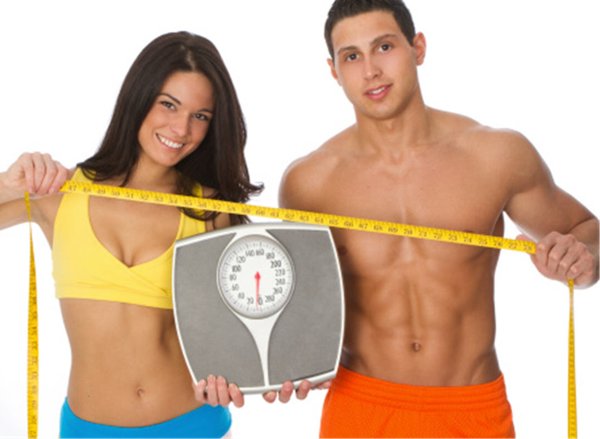

When it comes to measuring weight loss, the numbers game can be deceiving. Add more accuracy to your fitness journey with these insider tips.
1. Take Progress Photos
As uncomfortable as it might be to snap a photo when you feel out of shape, less than stellar, or downright schlubby, knowing where you started is essential. It's easy to let the scale rule, but when you consider things like water weight, lean-mass gains, and bodyweight distribution, relying on a single number to decide if you're headed in the right direction seems arbitrary. Since you see yourself in the mirror daily, changes can be nearly imperceptible. Photos give you that necessary degree of separation—allowing you to take a step back and reflect weeks later. When you start your fitness journey, begin by taking photos of your front, side, and back. Every few weeks, take additional photos. If you're looking for accuracy, there's no need to suck in your gut or push your stomach out. Just stay relaxed, and keep the conditions the same to most accurately reflect your visual progress over time. This means wearing the same outfit, taking photos at the same time of day, and using the same angles and lighting.
2. Retest Your Benchmark Lifts
Instead of relying solely on reducing numbers, try increasing them—in the form of weights, that is. When you kick off your journey, take some time to test your strength benchmarks. How much can you press and pull? What do your squat numbers look like? By having a ballpark idea of your strength baseline, you'll know what achievable numbers to aim for.
3. Use A Tape Measure
You might take dipping numbers on the scale as an indication of progress, but not all weight loss is fat loss. To see if you're leaning out, a tape measure can be a more effective tool. Some areas you might want to track the inches on include your chest, hips, waist, thighs, biceps, and shoulders.